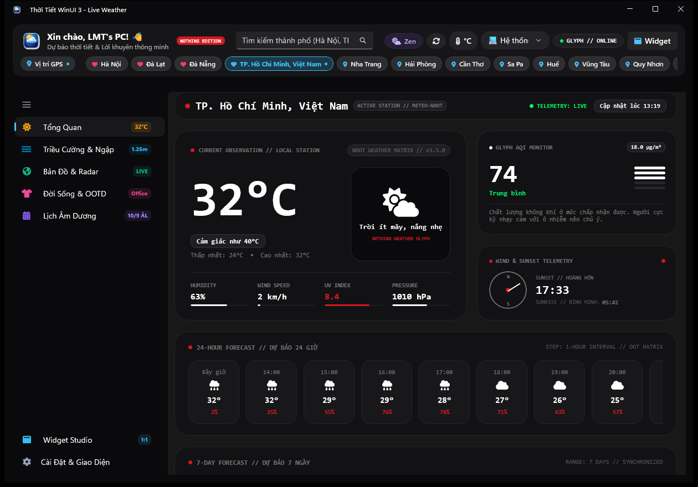
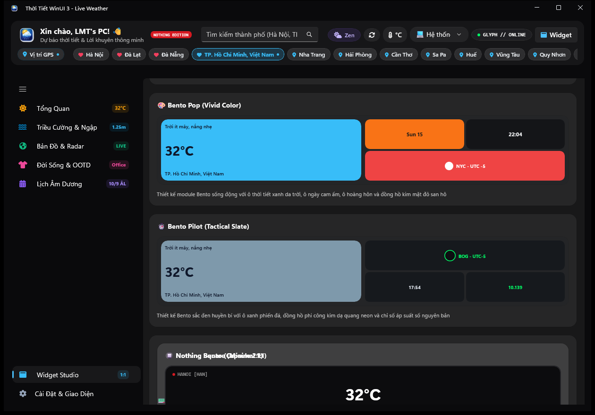
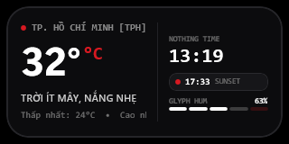
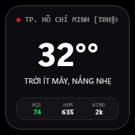

Hệ Điều Hành Vi Khí Hậu Cá Nhân Hóa
Weather WinUI 3.5.0 (Nothing Edition & Fluent 2)
Được xây dựng trên nền tảng Windows App SDK (WinUI 3) & .NET 8. Đột phá với ngôn ngữ thiết kế kép Fluent 2 & Nothing OS (Dot-matrix & Glyph aesthetic), bộ đôi Desktop Widget Nothing Bento & Square, cùng hệ thống mô phỏng bán nhật triều, cảnh báo ngập đô thị tại TP.HCM & Hà Nội, Radar Doppler 360°, trợ lý trang phục OOTD và Lịch Vạn Niên Việt Nam.
Ngôn Ngữ Thiết Kế Kép: Fluent 2 vs Nothing Design
Chuyển đổi tức thì giữa phong cách Fluent 2 mềm mại và thẩm mỹ Nothing OS tối giản, cơ học, đậm chất công nghệ tương lai
Thẩm Mỹ Tối Giản Cơ Học Với Ma Trận Điểm NDot & Chấm Đỏ Glyph
Weather WinUI 3.5.0 giới thiệu tùy chọn ngôn ngữ thiết kế toàn diện trong Cài đặt (Settings). Ở chế độ Nothing Design, toàn bộ giao diện app khoác lên lớp áo OLED Stealth Black hoặc CMF Chalk Light, huy hiệu nhận diện chấm đỏ Nothing Red (#D71921), đường viền wireframe 1px siêu mảnh, các thẻ Bento tròn góc, và hỗ trợ cờ dòng lệnh CLI --design=Nothing / --design=Fluent2.

Thẻ Bento tối giản, huy hiệu Nothing Edition góc phải, tương phản cao, tối ưu 100% tiếng Việt & tiếng Anh không lỗi glyph.

Tích hợp đầy đủ thẻ chọn Nothing Bento (2:1) và Nothing Square (1:1), ghim trực tiếp ra Desktop và lưu trạng thái độ mờ.

Đồng hồ số to bản, hiển thị ma trận điểm, nhiệt độ lớn, độ ẩm, biên độ ngày và thanh trạng thái chỉ số AQI.

Thiết kế hình vuông bo góc, chấm đỏ Nothing Red, đồng hồ số trên cao và thanh đếm thời gian hoàng hôn trực quan.
Ngăn Xếp Công Nghệ (Modern Tech Stack)
Khai thác tối đa sức mạnh phần cứng desktop và các API thế hệ mới của hệ điều hành Windows 10/11
WinUI 3 & WinAppSDK
Native UI framework thế hệ mới nhất của Microsoft, hỗ trợ hiệu ứng Mica Alt, Desktop Acrylic và canvas tương tác cao.
v1.8.250907003.NET 8 & C# 12
Self-Contained SingleFile deployment, khởi động tức thì, tối ưu hoá bộ nhớ GC và tiêu thụ 0.0% CPU khi chạy nền.
.NET 8.0 LTSOpen-Meteo Weather API
Dữ liệu vi khí hậu độ phân giải cao toàn cầu, mô hình tổ hợp ECMWF, GFS, ICON không yêu cầu API key cá nhân.
High-Res EnsembleDual Design Engine
Chuyển đổi mượt mà giữa Fluent 2 và Nothing OS. Quản lý palette màu tự động thích ứng với Dark & Light Mode.
Fluent 2 & Nothing OSWin32 Font Engine
Cơ chế đăng ký runtime AddFontResourceEx bảo đảm 100% hiển thị tiếng Việt có dấu và bộ biểu tượng FontAwesome 6.
Inno Setup 6 Automation
Đóng gói tự động bộ cài đặt chuyên nghiệp, dọn dẹp tiến trình khi nâng cấp và tích hợp bản Portable siêu gọn.
ISCC v6.3.37 Phân Hệ Chuyên Sâu Trong Phiên Bản v3.5.0
Kiến trúc Modular UserControl độc lập nạp lười Lazy Loading, tối ưu thời gian phản hồi và tính ổn định tuyệt đối
Tổng Quan Vi Khí Hậu
TAB 1 • OVERVIEW & SCRUBBERThẻ Hero khí quyển với Dynamic Chromatic Sky đổi màu theo góc mặt trời thực tế kết hợp thanh tua thời gian 24h.
- 24h Interactive Scrubber: Kéo tua nhanh thời gian để đổi màu trời và cập nhật nhiệt độ tức thì.
- Đường cong nhiệt độ 24h: Spline Bezier mượt mà hiển thị kèm xác suất mưa.
- Dự báo 7 ngày tới: Bổ sung thanh đo Weekly Min-Max Range Bar trực quan.
- 8 Chỉ số chuyên sâu: UV, độ ẩm, áp suất, gió, tầm nhìn, điểm sương.
Thủy Triều & Ngập Đô Thị
TAB 2 • TIDE & URBAN FLOODMô hình hải văn bán nhật triều 2 đỉnh 2 đáy kết hợp hệ thống cảnh báo ngập lụt trọng điểm tại TP.HCM & Hà Nội.
- Đồ thị sóng bán nhật triều 24h: Trực quan hóa con nước lớn / nước ròng.
- Đếm ngược đỉnh triều: Thông báo thời gian con nước đạt mức cực đại.
- 40+ Tuyến đường cảnh báo ngập: Cảnh báo mức nước dâng theo thời gian thực.
Radar Doppler Khí Tượng
TAB 3 • 360°° DOPPLER RADARMô phỏng đài radar thời tiết quét vòng 360° với vệt sáng phosphor trail 12 lát cắt phản hồi mây mưa.
- Vệt quét phosphor trail 360°: Chu kỳ quét liên tục với hiệu ứng ánh sáng mượt mà.
- Bản đồ mây vệ tinh tương tác: Phóng to thu nhỏ vùng áp thấp nhiệt đới và bão.
- Thang đo phản xạ dBZ: Phân tầng cường độ mưa từ lất phất đến giông lốc.
Lịch Vạn Niên & Tiết Khí
TAB 4 • LUNAR CALENDARHệ thống lịch Âm Dương truyền thống Việt Nam kết hợp 24 Tiết Khí và chi tiết ngày thông minh Inline Day Details.
- Lịch tháng 42Đô ngày: Can Chi ngày, tháng, năm, hoàng đạo / hắc đạo.
- Inline Day Details: Bấm vào ngày để xem chi tiết giờ tốt, xuất hành ngay trong trang.
- 24 Tiết khí truyền thống: Lập xuân, Vũ thủy, Thanh minh, Đông chí...
Trợ Lý Trang Phục OOTD & Thẻ HD
TAB 5 • OOTD & WEATHER CARDSCố vấn ăn mặc thông minh theo nhiệt độ & thời tiết kết hợp studio xuất thẻ thời tiết Full HD 1080p.
- Gợi ý trang phục thông minh: Phối đồ đi làm, đi chơi, che mưa, chống nắng.
- Xuất thẻ thời tiết Full HD: Định dạng Story dọc (9:16) & Banner ngang (16:9).
- Sao chép trực tiếp vào Clipboard: Chia sẻ nhanh lên mạng xã hội hoặc tin nhắn.
Widget Studio Siêu Cá Nhân Hóa
TAB 6 • 10+ DESKTOP STYLESPhòng trưng bày và thiết kế Desktop Widget tương tác. Hỗ trợ xem trước và ghim trực tiếp 10+ phong cách widget.
- Nothing Bento & Square: Thiết kế tối giản cơ học chuẩn Nothing OS mới.
- Bento Vivid & Bento Tactical: Màu sắc rực rỡ và phong cách cyberpunk.
- Retro LCD & Seasonal Widgets: Màn hình điện tử cổ điển & bộ sưu tập 4 mùa.
- Tùy chỉnh độ mờ (Opacity): Kéo thanh trượt từ 20% đến 100% không lo mất cài đặt.
Trung Tâm Cài Đặt Win11 Toàn Trang
TAB 7 • SETTINGS & DUAL DESIGN CONTROLSBố cục 2 cột tiêu chuẩn Windows 11 với bộ điều khiển Ngôn ngữ thiết kế (Design Language), chuyển đổi theme Sáng / Tối, quản lý vị trí đa thành phố, cấu hình khởi động cùng Windows và kiểm tra cập nhật tự động.
10+ Mẫu Widget Desktop c Bản Cho Mọi Phong Cách
Ghim nổi trên màn hình Desktop Windows, luôn cập nhật thời tiết và thời gian thực mà không làm phiền công việc
Biên Niên Sử Phát Triển Toàn Bộ Phiên Bản
Hành trình nâng cấp liên tục từ phiên bản đầu tiên đến hệ điều hành vi khí hậu hoàn chỉnh v3.5.0
Cột Mốc Phát Hành Chính Thức v3.5.0: Ra mắt ngôn ngữ thiết kế kép Fluent 2 & Nothing Design. Tùy chọn chuyển đổi phong cách ứng dụng toàn diện trong Settings với hỗ trợ Dark Mode OLED Stealth Black (#0A0A0C) và Light Mode CMF Chalk Light (#F0F0F2); Huy hiệu góc Nothing Edition chấm đỏ đặc trưng (#D71921); Bộ đôi Desktop Widget độc bản Nothing Bento Capsule (320x160 px, 2:1) và Nothing Square (190x190 px, 1:1); Nâng cấp Widget Studio hỗ trợ toàn diện; Hỗ trợ cờ khởi động CLI --design=Fluent2 và --design=Nothing; Đảm bảo 100% hiển thị tiếng Việt và tiếng Anh chuẩn Unicode, không lỗi font glyph.
Bổ sung 3 phong cách widget hiện đại độc quyền: Bento Vivid (màu sắc rực rỡ bo tròn), Bento Tactical (phong cách stealth công nghệ quân sự) và Retro LCD (màn hình tinh thể lỏng cổ điển thập niên 90); Nâng cấp Widget Studio hỗ trợ xem trước và chọn lọc trực quan.
Nâng cấp đồ họa thời tiết sống động và chân thực hơn bao giờ hết; Thiết kế hoạt cảnh theo mùa: Tết Hoa Mai rơi, Mùa Thu Lá Phong vàng đỏ, Mùa Đông Bão Tuyết, Giáng Sinh Chuông Vàng; Ra mắt trọn bộ widget Seasonal theo từng mùa trong năm.
Cải tiến biểu đồ đường cong nhiệt độ Bezier Spline 24h, nâng cấp động cơ âm thanh môi trường Ambient Weather Sounds, tối ưu phản xạ radar và tăng cường thuật toán dự báo triều cường TP.HCM & Hà Nội.
Kiến trúc Modular UserControl 7 Tab độc lập, nạp lười Lazy Loading, tiêu thụ 0.0% CPU khi nhàn rỗi; Tối ưu hóa song song Windows 10 & 11; Win32 AddFontResourceEx chống mất icon; Đồ thị sóng bán nhật triều 24h & cảnh báo ngập lụt đô thị.
Tích hợp trợ lý Hôm Nay Mặc Gì (OOTD Advisor); Bộ công cụ xuất thẻ thời tiết Full HD; Âm thanh môi trường Ambient Sounds; Cửa sổ nổi Quick Peek; Khắc phục triệt để lỗi lưu cài đặt và độ mờ widget.
Khởi tạo ứng dụng WinUI 3; kết nối Open-Meteo API; Windows Toast Notifications, System Tray icon; Lịch Vạn Niên 42Đô ngày kết hợp Âm Lịch, Can Chi, 24 Tiết Khí; widget Mini Island đầu tiên.
Gói Phát Hành Chính Thức Version 3.5.0
Cả 2 định dạng: Bộ cài đặt chuẩn Windows (.exe) và Bản di động Portable (.zip) của Version 3.5.0 đều đã sẵn sàng
| Phiên Bản | Định Dạng | Dung Lượng | Đặc Điểm & Tính Năng Nổi Bật | Đường Dẫn Trong Kho Lưu Trữ |
|---|---|---|---|---|
| Version 3.5.0 Official MỚI NHẤT | Bộ cài Windows Setup (.exe) | ~84.5 MB | Cài đặt tự động chuẩn Windows 10/11, tích hợp sẵn Nothing Design, tạo shortcut Desktop, Start Menu, gỡ cài đặt sạch sẽ. | Output/WeatherApp_Setup_v3.5.0.exe |
| Version 3.5.0 Official MỚI NHẤT | File nén ZIP Portable | ~98.0 MB | Giải nén và chạy ngay WeatherApp.exe. Đầy đủ runtime self-contained, hỗ trợ tham số CLI --design=Nothing. |
Output/WeatherApp_Portable_v3.5.0.zip |
| Version 3.4.1 Official | Bộ cài Inno Setup (.exe) | ~84.0 MB | Bản phát hành tiền nhiệm với 3 widget Bento Vivid, Bento Tactical và Retro LCD. | Output/WeatherApp_Setup_v3.4.1.exe |
| Version 3.4.1 Stable | File nén ZIP Portable | ~98.0 MB | Bản di động độc lập v3.4.1 không cần cài đặt. | Output/WeatherApp_Portable_v3.4.1.zip |
| Version 3.0.0 Stable | Bộ cài Inno Setup (.exe) | ~83.0 MB | Cột mốc phát hành kiến trúc Modular 7 tab đầu tiên. | Output/WeatherApp_Setup_v3.0.0.exe |